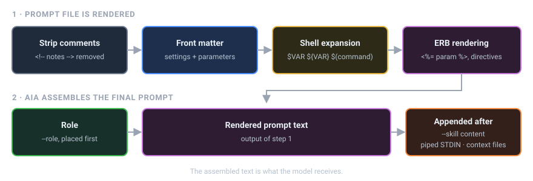

Prompt Files¶
A prompt file is a Markdown file that holds a prompt you want to reuse. You keep prompt files in your prompts directory and run one by naming it on the command line.
Prompt IDs¶
The prompt ID is the file name without its .md extension. A file named ~/.prompts/code_review.md has the prompt ID code_review, and you run it like this:
AIA looks for <prompts dir>/<prompt ID>.md. If there is no such prompt and no file by that name either, AIA stops and suggests close matches. Here the prompt is code_review but a hyphen was typed:
No prompt named 'code-review' in /Users/you/.prompts (and no file by that name).
Did you mean: code_review?
Prompt IDs can include subfolders and hyphens: ~/.prompts/dev/code-review.md is dev/code-review. An ID that starts with /, ./, ../ or ~/ is a path to a prompt file anywhere on disk; .md is optional.
If the first argument names a file that exists in your current directory, AIA treats it as a context file rather than a prompt ID. Context files alone aren't enough to run: unless you add --chat (or the file is an executable prompt), AIA stops with A prompt ID is required…. See Context Files & Piping.
The prompts directory¶
The default prompts directory is ~/.prompts. You can change it three ways. They are listed here from lowest to highest priority:
A typical layout looks like this:
~/.prompts/
├── code_review.md # prompt IDs live at the top level
├── summarize.md
├── standup.md
├── roles/ # roles, used with --role
│ ├── ruby_expert.md
│ └── editor.md
├── skills/ # skills, used with --skill (one directory per skill)
│ └── changelog/
│ └── SKILL.md
├── tools/ # default directory for your own tools
└── _prompts.log # AIA's prompt history log
Roles and skills are covered in Roles & Skills. Tools are covered in Tools.
Anatomy of a prompt file¶
A prompt file has two parts. The first is an optional YAML front matter block between --- lines. The second is the body, the text that becomes the prompt.
---
parameters:
language: Ruby
focus: readability
---
<!-- Reviewer notes: keep this prompt short. HTML comments are removed. -->
You are reviewing <%= language %> code.
Concentrate on <%= focus %> and point out anything that will surprise
the next person who reads it.
Today is $(date +%A).
When you run it, AIA does the following:
- Removes HTML comments (
<!-- ... -->), so you can leave notes for yourself in the file. - Reads the front matter and applies its settings.
- Expands shell references such as
$(date +%A)and$HOME. - Renders ERB tags such as
<%= language %>, and asks you for any required parameter values first. - Adds the role in front, then adds skills, piped input and context files after the text. (In a chat session, skills go into the system prompt instead.)

Steps 3 and 4 are explained in ERB & Shell. Parameters are explained in Parameters.
Front matter keys¶
AIA understands these keys at the top level of the front matter:
| Key | What it does | Example |
|---|---|---|
parameters |
Declares the values the prompt needs. A null (empty) value means required. |
parameters: { name: null, tone: friendly } |
next |
Prompt ID to run after this one | next: explain_joke |
pipeline |
List of prompt IDs to run after this one | pipeline: [evaluate, pick_best] |
mode |
Runs this prompt in a special mode (debate, verify, decompose, delegate, spawn, orchestrate or concurrent), as the chat directive of that name would. See Advanced Modes. |
mode: debate |
shell |
false turns off shell expansion for this file |
shell: false |
erb |
false turns off ERB rendering for this file |
erb: false |
config |
Any other AIA setting, nested the same way as in the config file | see below |
next and pipeline cannot both appear in one file. AIA stops with an error if they do.
Model settings (model, temperature, top_p, and llm: keys under config:) take effect before the prompt is sent. A different model: rebuilds the robot, carrying the conversation over as model_switch_history says; the other settings retune it in place. See Configuration Precedence.
The config: section¶
Use config: for any setting that has no shortcut key. It takes the same nested keys as ~/.config/aia/aia.yml (see Config Keys):
Don't set a value both ways. If a top-level key such as temperature: and the matching config: key are both in one file, AIA stops with a Conflict: error that names both keys.
Other keys¶
AIA ignores any front matter key it doesn't recognize. That makes the front matter a good place for your own notes:
Front matter settings are scoped to the run
Settings from front matter change AIA's configuration for the rest of the current run. They never change your config file.
Finding prompts with fzf¶
Once you have a lot of prompts, you may not remember their exact names. Install fzf and use --fuzzy (-f) to choose a prompt interactively:
fzf lists every prompt ID at the top level of your prompts directory and shows a preview of the highlighted file. Type to filter the list, press Enter to run the selected prompt, or press Esc to cancel.
--fuzzy works with other options too:
aia -f --model gpt-4o # pick a prompt, run it with gpt-4o
aia -f --chat # pick a prompt, then keep chatting
If fzf isn't installed, aia --fuzzy stops with Error: 'fzf' is not installed. Please install 'fzf' to use the --fuzzy option.
Writing a prompt step by step¶
-
Create the file:
-
Run it from inside a git repository with staged changes:
-
Improve the wording and run it again. The prompt is plain text, so you can refine it as often as you like.
See also¶
- Parameters: make one prompt work for many inputs
- Directives: include files, web pages and other prompts
- ERB & Shell: dynamic content in a prompt
- Pipelines: chain prompts together with
nextandpipeline - Running Prompts: everyday command-line use